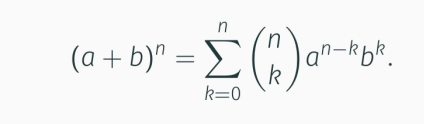
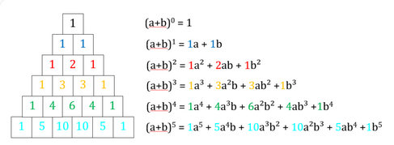

Mathe Klausur
Vorlesung 3: Mathematische Beweise, Induktion, Binomialkoeffizient, Binomischer Lehrsatz
Mathematische Beweise
Direkter Beweis
Axiom: ein Wahrer Grundsatz, den man nicht Beweisen braucht
A₀⟹A₁⟹...⟹An
Wenn A₀ ein Axiom ist und darausfolgt, dass A₁ ein Axiom ist, dann ist An auch ein Axiom
Indirekter Beweis
A⟹B
kann nicht direkt Bewiesen werden, allerding kann man durch die negierung von A⟹B einen Wiederspruch zur Voraussetzung herleiten.
Wenn nichtB⟹nichtA dann A⟹B
Beweis durch vollständige Induktion
Induktionsanfang (IA)
n₀∈ℕ und n≥n₀ müssen beide hier Bewiesen werden. Man setzt für n
die kleinst mögliche Zahl ein, um zu beweisen ob die Formel stimmt.
Induktionsvoraussetzung (IV)
Wir schreiben, dass wir durch den IA beweisen können, dass die Formel mindestens bei einem n stimmt
Induktionsschritt (IS)
A(n)⟹A(n+1)
Wir setzen n+1 für jedes n ein
Jetzt versuchen wir die Formel so umzubilden, dass beide Formeln gleich sind.
Hierfür bilden wir eine Formel, bis diese wie die Grundformel aussieht und setzen dafür die andere Grundformel aus der IV ein.
Jetzt können wir beide Formeln gleich werden lassen
gutes erklär Video
Gaußsche Summenformel

Binomialkoeffizient = (n über k) = (n; k)
Fakultät: n! = 1*2*3*...*n
falls n = 0 : n! = 1
falls n > 0 : n! = n*(n-1)!
Binomialkoeffizient: (n; k) = n!/(k!*(n-k)!)
(n; k-1)+(n; k) = (n+1; k)
Binomischer Lehrsatz
Der binomische Lehrsatz rechnet die Ergebnise der binomischen Formel mit beliebig hohem Exponenten aus. (insofern dieser größer gleich 0 ist)

Guter online Rechner
Das Ergebnis wird immer um einen Term größer je höher der Exponent ist.
Das Pascalsche Dreieck hilft dabei dies Abzulesen.
